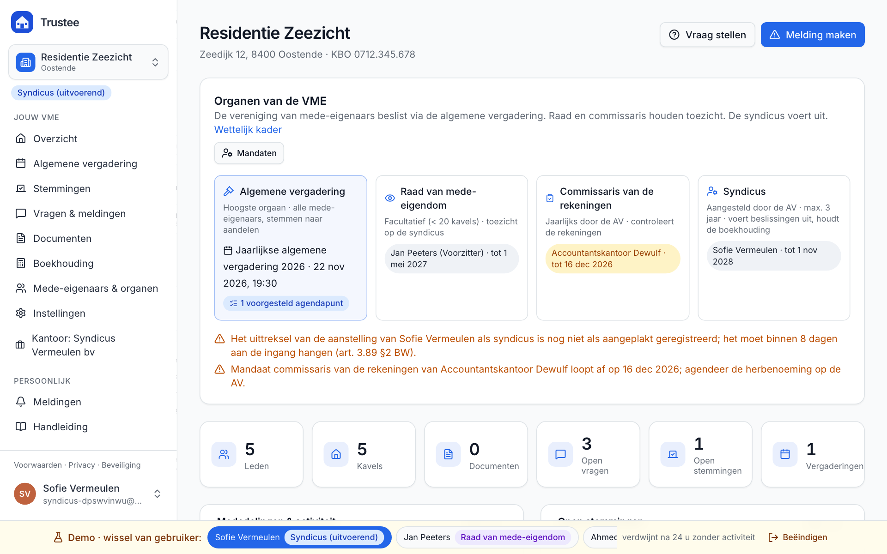
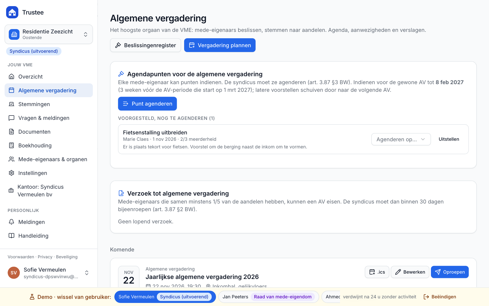
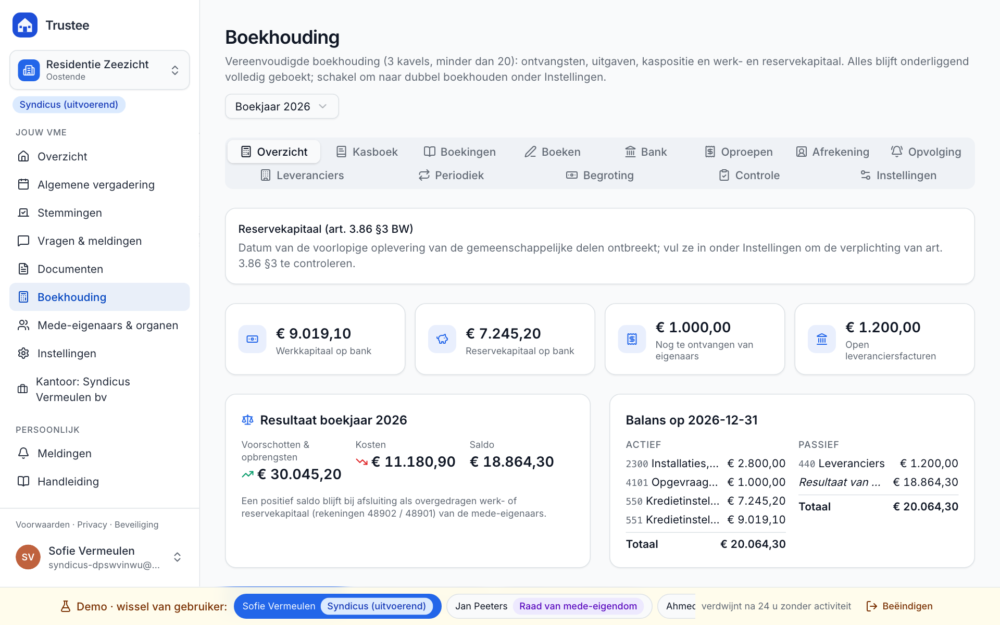
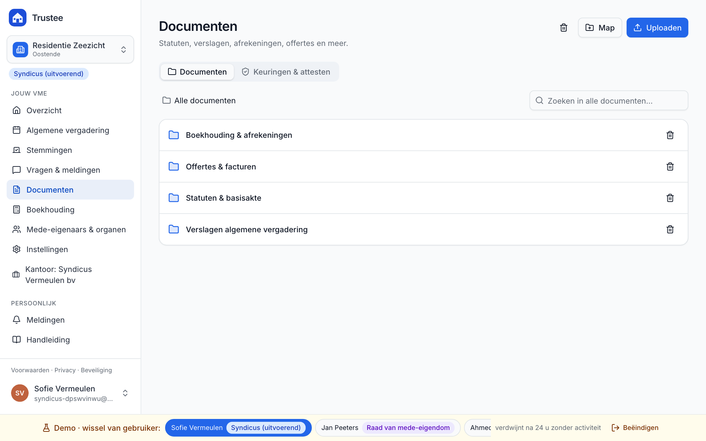

Open source platform voor Belgische verenigingen van mede-eigenaars en syndici: algemene vergadering, stemmingen, documenten, meldingen en boekhouding, gebouwd op Boek 3 van het Burgerlijk Wetboek.
Geen account nodig. Eén klik maakt een ingevuld gebouw met vijf rollen. Na 24 uur zonder activiteit verdwijnt alles.

Agendapunten van mede-eigenaars, oproeping met termijncontrole, volmachten, quorum, stemming naar aandelen en notulen binnen 30 dagen. De berekening van elke stemming blijft zichtbaar.

Dubbele boekhouding of kasboek, oproepen met gestructureerde mededeling, bankimport via CSV en CODA, jaarrekening, afrekening per kavel en verkoopafrekening.

Statuten, verslagen, offertes en facturen op één plaats. Raad en commissaris krijgen hun wettelijke inzage, en de syndicus ziet wie wat inkeek.

Een VME loopt zelden volgens het boekje. Deze situaties uit de wet zijn gebouwd en getest.
Trustee draait op Cloudflare Workers, of lokaal met dezelfde runtime. De lokale start heeft geen Cloudflare-account nodig.
git clone https://github.com/MatthiasDM/trustee cd trustee && npm install npm run db:migrate:local && npm run db:seed:local cp .dev.vars.example .dev.vars npm run dev
Vrijgegeven onder de GNU GPL v3 of later, zonder enige garantie. Trustee is een hulpmiddel en geen juridisch advies: de syndicus en de organen van de VME blijven verantwoordelijk.